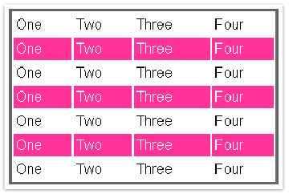

var tables = document.getElementsByTagName("table");
for ( var t = 0; t < tables.length; t++ ) {
var rows = tables[t].getElementsByTagName("tr");
for ( var i = 1; i < rows.length; i += 2 )
if ( !/(^|s)odd(s|$)/.test( rows[i].className ) )
rows[i].className += " odd";
}
$$("table").each(function(table){
Selector.findChildElements(table, ["tr"])
.findAll(function(row,i){ return i % 2 == 1; })
.invoke("addClassName", "odd");
});
$("tr:nth-child(odd)").addClass("odd");
$(html)
$(elems)
$(fn)
$(expr, context)
var my_div = $("<div><p>Ба-бах!</p></div>");
my_div.appendTo("#body");
$("<div><p>Ба-бах!</p></div>").appendTo("#body");
<div id="body"></div>
<div id="body"><div><p>Ба-бах!</p></div></div>
$(document.body).css( "background-color", "black" );
$( myForm.elements ).hide();
$("div > p");
<p>one</p> <div><p>two</p></div> <p>three</p>
[ <p>two</p> ]
$("input:radio", document.forms[0]);
$("div", xml.responseXML);
p.highlight > div
{
color: #F00;
}
table tr:nth-child(odd)
{
background-color: magenta;
}
$("tr:nth-child(odd)").addClass("odd");
$("#unique");
// аналог из CSS:
// #unique {...}
$("a.external");
// аналог из CSS:
// a.external {...}
$("#outer > div.news-item > p:nth-child(odd)");
$("p[a]");
$("//a[@rel='nofollow']");
$("ul/li:visible"); // XPath + селектор
// или
$("ul > li:visible"); // CSS + селектор
// Находим необходимую нам радиокнопку и эмулируем нажатие на нее
$("input[@value='1']:radio").click();
// Находим необходимую нам опцию в списке и выбираем ее
// (устанавливаем значение атрибута selected равным "selected"):
$("option[@value='1']").attr("selected", "selected");
$(document).ready(
function() { /* ... */}
);
$(
function(){/* ... */}
);
$(document).ready(
function()
{
// добавим ко всем ссылкам на странице некий текст
$("a").append("<span>(opens in new window)</span>");
}
);
$(document).ready(init);
function init()
{
// находим все элементы Р с классом highlight и задаем им другой фон
$("p.highlight").css("background-color", "#000");
// естественно, можно выполнять любые действия
alert('Функция init()');
// вызывать другие функции
anotherFunc();
// манипулировать объектами в документе
document.getElementById("some_id");
}
// Используем кратую форму записи
$(
function()
{
alert('документ готов!');
}
)
| append(content)/prepend(content) | Добавить переданный элемент или выражение в конец/в начало выбранного элемента. |
| appendTo(expr)/prependTo(expr) | Добавить выбранный элемент в конец/в начало переданного элемента. |
| attr(name) | Получить значение атрибута. |
| attr(params) | Установить значение атрибутов. Атрибуты передаются в виде {ключ1:значение1[, ключ2:значение2[, …]]} |
| attr(name, value) | Установить значение одного атрибута. |
| css(name)/css(params)/css(name, value) | Получить/установить значение отдельных параметров CSS. Аналогично функции attr(). |
| text()/text(val) | Получить/задать текст элемента. В случае ввода текста специальные символы HTML заменяются символьными примитивами (entities, например, знак ">" будет заменен >). |
| empty() | Удалить все подэлементы текущего элемента. |
<div id="my-div">
<a href="http://google.com/" id="my-link">Ссылка</a>
</div>
$("#my-div").html(); // Вернет <a href="#" id="my-link">Ссылка</a>
$("#my-link").attr("href"); // Вернет http://google.com/
$("#my-div").append("<strong>Полужирный текст</strong>");
// или
$("<strong>Полужирный текст</strong>").appendTo($("#my-div"));
<div id="my-div">
<a href="http://google.com/" id="my-link">Ссылка</a>
<strong>Полужирный текст</strong>
</div>
$("#my-div").empty();
<div id="#my-div"></div>
$("#my-div").text("<a>Якорь</a>");
<div id="#my-div"><a>Якорь</a></div>
$("#my-div").css(
{
backgroundColor: "#F00",
color: "#00F"
}
);
<div id="my-div" style="background-color: #F00; color: #00F">
<a>Якорь</a>
</div>
// Заполняем скрытый элемент <div id="divEdit"></div> текстом и показываем его
$("#divEdit").html(response).show();
// найти <select id="my_select">...</select>
var sel = $("#my_select");
// добавляем к нему <option value="1">Пример опции</option>
$("<option></option>") // создаем требуемый элемент
.attr("value", 1) // устанавливаем значение одного из его атрибутов
.html("Пример опции") // записываем в него текст
.appendTo(sel); // прикрепляем к уже существующему элементу
<p><span>Hello</span>, how are you?</p>
$("p").find("span");
<span>Hello</span>
$("p").find("span").html("Ahoy").end().append("<p>I'm fine<p>");
| Код | Текущая коллекция элементов |
| $("p") | [<p>..</p>] |
| .find("span") | [<span>..</span>] |
| .html("Ahoy") | [<span>..</span>] |
| .end() | [<p>..</p>] |
| .append(...); | [<p>..</p>] |
<p><span>Ahoy</span>, how are you?<p>I'm fine</p></p>
$("body") // 1
.find("div").css("background-color", "green") // 2
.end() // 3
.find("span").css("border", "1px solid #F00") // 4
.end() // 5
.css("background-color", "#000");
var body = $("body");
$("div", body).css("background-color", "green");
$("span", body).css("border", "1px solid #F00");
body.css("background-color", "#000");
$("a").css("color", "green");
$("div.test").append("<span>Тестовый элемент</span>");
$("p")[0].className = "test";
$("p"); // Получили объект jQuery
$("p").get(); // Получили соответствующую коллекцию DOM-элементов
$("a").get(0); // Получили первую из всех ссылок на странице
<select id="my-select">
<option>Option 1</option>
<option>Option 2</option>
</select>
$("#my-select").get(0).selectedIndex = $("#my-select").get(0).options.length – 1;
$("p").each(
function()
{
// внутри функции this указывает на текущий DOM-элемент
alert(this.innerHTML);
}
);
$("#zebra tr").each(colorize); // передаем в each функцию colorize
function colorize(index)
{
if(index % 2 == 1) // index является индексом текущего элемента в коллекции
$(this).addClass("odd");
}
animate(params, speed, easing, callback);
$("#mydiv")
.animate({height: "hide"}, 300)
.text("Новый текст")
.animate({height: "show"}, 300);
show: function(speed,callback){
// находим в переданной нам коллекции скрытые элементы (см. врезку)
var hidden = this.filter(":hidden");
// если нам передана скорость, то вызываем метод animate
if(speed)
{
hidden.animate(
{
height: "show",
width: "show",
opacity: "show"
},
speed,
callback
)
}
else
{
// иначе просто проходим по коллекции элементов и показываем их,
// меняя стиль display с none на block
hidden.each(
function()
{
this.style.display = this.oldblock ? this.oldblock : "";
if ( jQuery.css(this,"display") == "none" )
this.style.display = "block";
}
);
}
return this;
}
for(i = 0; i < 10; i++)
{
$("#my-div").animate({height: "show"}, 300);
$("#my-div").animate({height: "hide"}, 300);
}
$.post(url[, params[, callback]])
$.get(url[, params[, callback]])
$.post(
'/ajaxtest.php',
{
type: "test-request",
param1: "param1",
param2: 2
},
onAjaxSuccess
);
function onAjaxSuccess(data)
{
// Здесь мы получаем данные, отправленные сервером
alert(data);
}
<?php
// Если страница вызвана с помощью .post(), переданные значения будут,
// как всегда, доступны в глобальной переменной $_POST
// Если страница вызвана с помощью .get, переданные значения будут,
// как всегда, доступны в глобальной переменной $_GET
echo 'text';
?>
if($_SERVER['HTTP_X_REQUESTED_WITH'] == 'XMLHttpRequest')
{
// выполняем соответствующий код
}
<?php
header("Content-Type: text/xml; charset=utf-8");
?>
<list>
<item id="1">
Item 1
</item>
<item id="2">
Item 2
</item>
</list>
Наш JavaScript:
// Функцию post опускаем, написать ее не составляет труда
function onAjaxSuccess(xml)
{
// Получаем коллекцию всех элементов item из пришедшего xml
items = $("item", xml);
// Находим item с id="1"
item = $("#1", xml);
// или при помощи XPath
item2 = $("item[@id='2']", xml);
// Извлекаем текст из элемента
alert(item2.html());
}
Как видите, работа с полученным с сервера ответов в виде XML ничем не отличается от работы с уже загруженным в браузер документом.
AHAH
Как уже было видно в первом примере с методом post(), если значение заголовка Content-Type – не «text/xml», ответ с сервера передается как есть, в текстовом виде. Поскольку обычно такой ответ сразу показывается на странице без дополнительной обработки, то нет смысла заводить отдельные функции вроде onAjaxSuccess. Для получения и отображения полученного с сервера HTML jQuery предоставляет метод load:
load(url[, params[, callback]]);
Этот метод прикрепляется к любому элементу на странице, в котором планируется показать ответ с сервера. После выполнения запроса ответ с сервера автоматически запишется в соответствующий элемент:
$("#mydiv").load("/ajaxtest.php");
Мы выполняем запрос к файлу из первого примера про AJAX. После выполнения запроса в элемент с id="mydiv" будет записано слово «text».
AJAJ
Многие разработчики, столкнувшиеся с технологией AJAX, не любят передавать на клиент XML. Объясняется это тем, что XML может быть довольно большим по размеру, и существуют дополнительные трудности при разборе его структуры на клиенте. Благодаря jQuery, разбор XML на клиенте не представляет никакой сложности. А если разработчики активно используют AHAH, то и размеры передаваемого документа перестают быть решающим аргументом.
И все же многие предпочтут использовать JSON. JSON – это способ записи данных, который позволяет прогнать эту запись через функцию eval() и получить полноценный Javascript-объект. Для работы с данными в таком формате jQuery предлагает метод $.getJSON:
getJSON(url, params, callback)
После выполнения запроса ответ с сервера прогоняется через функцию eval(), а полученный объект передается в функцию callback:
<?php
header('Content-Type: text/javascript; charset=utf-8');
?>
{
params: <?php echo $_REQUEST['params']; ?>,
response: 'Наш ответ Чемберлену'
}
Javascript:
$.getJSON(
'/ajaxtest3.php',
{params: "text"},
onAjaxSuccess
);
function onAjaxSuccess(obj)
{
alert(obj.params);
alert(obj.response);
}
AJAJs
Помимо трех вышеперечисленных способов получения данных с сервера jQuery предлагает еще один. С его помощью можно загрузить и выполнить любой сценарий Javascript с сервера. Для этого используется метод getScript:
getScript(url[, callback])
Пример:
script.js
$("a").css("color", "#0F0");
Наш Javascript:
$.getScript('/script.js');
После выполнения этого метода будет загружен и выполнен сценарий script.js, который окрасит все ссылки на странице в зеленый цвет.
Расширяемся...
Главной особенностью библиотеки jQuery является ее расширяемость. Практически любой Web-разработчик может дополнить библиотеку своими методами, реализующими, например, свои эффекты или даже собственные селекторы (по типу :visible, :radio и т.п.). Писать модули, расширяющие функциональность jQuery, легко. Достаточно следовать нескольким простым правилам.
Наименования
Выберите название для своего плагина, например, «tester». Создайте .js-файл и назовите его jquery.tester.js.
Добавляем собственный метод
Чтобы добавить собственный метод, который будет доступен сразу из функции $(), достаточно добавить его в объект fn:
jQuery.fn.tester = function()
{
alert("Плагин работает!");
return this;
};
Теперь в файле достаточно написать:
<script src="jquery.js">
<script src="jquery.tester.js">
<script>
$("my-div").tester();
</script>
и плагин заработает.
Обратите внимание, что в конце функции мы написали «return this;». Это необходимо для того, чтобы можно было создавать цепочки из методов.
jQuery.extend
Чаще всего пользователи захотят вызывать ваш плагин с какими-то настройками. Ну, например, в таком стиле:
$("my-div").tester(
{
name: "Test",
value: "1"
}
);
Более того, вы захотите предоставить какие-то значения по умолчанию. Для этого можно использовать метод extend:
$.extend(target, prop1, ..., propN)
Здесь:
- target – начальный объект;
- prop1-propN – объекты, свойства которых дополняют или изменяют свойства начальногообъекта.
Например:
var obj = {name: "Smith", profession: "Agent"};
var obj2 = {name: "Neo", profession: "The One"};
var obj3 = {second_job: "Virus"};
var neo = $.extend(obj, obj2); // вернет {name: "Neo", profession: "The One"}
var a_smith = $.extend(obj, obj3); // вернет {name: "Smith", profession: "Agent", second_job: "Virus"};
Таким образом, мы можем хранить в плагине значения по умолчанию и заменять их полученными от пользователя:
jQuery.fn.tester = function(options) {
// Значения по умолчанию
var settings = {txt: "Плагин работает!", txt2: ""};
// Заменяем значения переданными
settings = jQuery.extend(settings, options);
// Выводим новые значения
alert("txt: " + settings.txt + "\n txt2: " + settings.txt2);
};
Теперь мы можем вызывать наш плагин с разными параметрами:
$("my-div").tester({txt: "Другой текст"});
$("my-div").tester({txt: "Другой текст", txt2: "Другой текст 2"});
Пример плагина
Рассмотрим пример плагина из официальной документации по jQuery.
Этот плагин позволит нам писать следующее:
// Пометить флажком
$("input[@type='checkbox']").check('on');
// Снять флажок
$("input[@type='checkbox']").check('off');
// Переключить флажок
$("input[@type='checkbox']").check('toggle');
Вот как этот плагин реализован:
jQuery.fn.check = function(mode) {
// если mode не определен, используем 'on' по умолчанию
var mode = mode || 'on';
// В функцию неявно передана коллекция выбранных элементов.
// Поэтому с этой коллекцией можно работать, как с любой другой
// коллекцией элементов в jQuery
// В нашем случае мы воспользуемся методом each()
return this.each(function()
{
switch(mode) {
case 'on':
this.checked = true;
break;
case 'off':
this.checked = false;
break;
case 'toggle':
this.checked = !this.checked;
break;
}
});
};
В заключение
К сожалению, формат статьи не позволяет в полном объеме рассказать обо всех возможностях библиотеки jQuery и ее плагинах. Но, надеюсь, этой статьи будет достаточно, чтобы заинтересовать разработчиков. В кратком справочнике перечислены селекторы, используемые в jQuery, а также ссылки на интересные ресурсы и различные плагины.
Краткий справочник
http://docs.jquery.com/DOM/Traversing/Selectors
CSS
Поддерживаемые селекторы CSS
*
Элемент Е, являющийся n-ым дочерним элементом своего родительского элемента.
E
Элемент типа E.
E:nth-child(n)
Элемент Е, являющийся n-ым дочерним элементом своего родительского элемента.
E:first-child
Элемент Е, являющийся первым дочерним элементом своего родительского элемента.
E:last-child
Элемент Е, являющийся последним дочерним элементом своего родительского элемента.
E:only-child
Элемент E, являющийся единственным дочерним элементом своего родительского элемента.
E:empty
Элемент E, у которого нет дочерних элементов (включая текстовые узлы).
E:enabled
Активный элемент Е пользовательского интерфейса.
E:disabled
Неактивный элемент Е пользовательского интерфейса.
E:checked
Отмеченный элемент Е пользовательского интерфейса (например, радиокнопка).
E.warning
Элемент E с классом "warning" (class="warning").
E#myid
E с ID равным "myid" (выберет максимум один элемент).
E:not(s)
Элемент E, не соответствующий простому селектору s.
E F
Элемент F, являющийся потомком элемента E
E > F
Элемент F, являющимся дочерним элементом элемента E.
E + F
Элемент F, которому непосредственно предшествует элемент E.
E ~ F
Элемент F, которому предшествует элемент E.
E,F,G
Выбрать все элементы E, F и G.
Другие селекторы
Все селекторы атрибутов должны записываться в стиле XPath, то есть с предваряющим символом «@»:
E[@foo]
элемент E с аттрибутом «foo».
E[@foo=bar]
Элемент E, у которого значение атрибута «foo» равно «bar».
E[@foo^=bar]
Элемент E, у которого значение атрибута «foo» начинается с «bar».
E[@foo$=bar]
Элемент E, у которого значение атрибута «foo» оканчивается на «bar».
E[@foo*=bar]
E, у которого значение атрибута «foo» содержит «bar».
-Примеры использования
jQuery
Аналог из CSS
$(“#my-id”)
#my-id {}
$(“a.classname”)
a.classname {}
$(“p, div.myclass, a#my-id”)
p, div.myclass, a#my-id {}
$(“div:last-child”)
div:last-child {}
$(“*:checked”)
*:checked
XPath
Определение местоположения
Абсолютные пути
$("/html/body//p")
$("/*/body//p")
$("//p/../div")
Относительные пути
$("a",this)
$("p/a",this)
Поддерживаемые селекторы по оси
Потомок Элемент содержит потомков
$("//div//p")
Дочерний У элемента есть дочерний элемент
$("//div/p")
Предшествующий соседний элемент Элементу предшествует другой элемент на той же оси
$("//div ~ form")
Родитель Выбирает родительский элемент элемента
$("//div/../p")
Поддерживаемые предикаты
[@*] Содержит атрибут
$("//div[@*]")
[@foo] Содержит атрибут «foo»
$("//input[@checked]")
[@foo='test'] Атрибут «foo» равен «test»
$("//a[@ref='nofollow']")
[Nodelist] Элемент соддержит список узлов, например:
$("//div[p]")
$("//div[p/a]")
Предикаты, поддерживаемые по-другому
[last()] или [position()=last()] становится :last
$("p:last")
[0] или [position()=0] становится :eq(0) или :first
$("p:first")
$("p:eq(0)")
[position() < 5] становится :lt(5)
$("p:lt(5)")
[position() > 2] становится :gt(2)
$("p:gt(2)")
Специальные селекторы
jQuery поддерживает некоторые селекторы, которые не являются частью стандартов CSS или XPath, но их использование облегчает жизнь.
:even
Выбирает все четные элементы из коллекции.
:odd
Выбирает все нечетные элементы из коллекции.
:eq(0) и :nth(0)
Выбирает элемент с индексом N из коллекции.
:gt(4)
Выбирает элементы с индексом большим, чем N.
:lt(4)
Выбирает элементы с индексом меньшим, чем N.
:first
Эквивалентно :eq(0).
:last
Выбирает последний элемент из коллекции.
:parent
Выбирает все элементы, у которых есть дочерние элементы (включая текст).
:contains('test')
Выбирает все элементы, которые содержат текст.
:visible
Выбирает все видимые элементы (включая элементы со стилями «display» равными «block» или «inline», «visibility» равным «visible» а также элементы форм, не являющихся типа «hidden»).
:hidden
Выбирает все невидимые элементы (включая элементы со стилями «display» равными «none», «visibility» равным «hiden» а также элементы форм, являющихся типа «hidden»).
Примеры:
$("p:first").css("fontWeight","bold");
$("div:hidden").show();
$("div:contains('test')").hide();
Селекторы форм
:input
Выбирает все элементы формы (input, select, textarea, button).
:text
Выбирает все текстовые поля (type="text").
:password
Выбирает все поля для ввода паролей (type="password").
:radio
Выбирает все радиокнопки (type="radio").
:checkbox
Выбирает все флаговые поля (type="checkbox").
:submit
Выбирает все кнопки для отсылки формы (type="submit").
:image
Выбирает все изображения на форме (type="image").
:reset
Выбирает все кнопки очистки формы (type="reset").
:button
Выбирает все остальные кнопки (type="button").
Примеры:
$("#myForm :input")
$("input:radio", myForm)
Трюки
Совместимость
Возможно, вы уже используете другие библиотеки Javascript, которые также используют знак доллара для своих нужд. Чтобы избежать конфликтов с такими библиотеками, вместо знака доллара достаточно использовать функцию jQuery:
jQuery("#myid"); // Эквивалентно $("#myid");
Самой библиотеке jQuery можно запретить использование знака доллар:
<script src="prototype.js">
<script src="jquery.js">
<script>
jQuery.noConflict();
// Дальше используем jQuery через jQuery(...)
jQuery("#myid").hide();
// Используем Prototype через $(...)
$('myid').addClassName('active').show();
</script>
Определение браузеров
Используйте объект $.browser:
if($.browser.ie)...
if($.browser.mozilla)...
Ускорение выборки
Для поиска элемента по id используйте только id. Для поиска элементов по классу используйте название элемента и название класса:
$("#my-div") // Не используйте $("div#mydiv");
$("div.div-class") // Не используйте $(".div-class");
Это связано с тем, что для поиска по id jQuery использует функцию getElmentById. Если использовано имя элемента, то jQuery сначала найдет все элементы с таким именем, и только потом начнет в них искать требуемый id. С классом ситуация обратная. Если имя элемента не указано, jQuery придется пробежаться по всем элементам в документе в поисках требуемого класса.
Отладка AJAX
Главная проблема в работе с технологией AJAX – сложность в определении возникающих ошибок. Незаменимым помощником в этом деле является Firebug – расширение для браузера Firefox. Это расширение позволяет отслеживать отсылаемые и получаемые запросы, проводить отладку скриптов и многое другое. Скачать это расширение можно с сайта http://getfirebug.com/
Ссылки и библиография
jQuery
- http://jquery.com/ – официальный сайт jQuery
- http://visualjquery.com/ – документация по jQuery в удобном виде
- http://docs.jquery.com/Tutorials – ссылки на различные учебные материалы по jQuery
Плагины
- http://interface.eyecon.ro/ – библиотека всевозможных эффектов и элементов интерфейса
- http://www.malsup.com/jquery/form/ – плагин, облегчающий работу с формами и технологией AJAX
- http://www.stilbuero.de/jquery/tabs – плагин для создания табов
- http://jquery.com/demo/thickbox/ – плагин для показа различной информации в «диалоге» внутри окна браузера
Разное
- http://www.webdevout.net/browser_support.php – подробный анализ совместимости популярных браузеров с Web-стандартами.
- http://getfirebug.com/ – расширение для браузера Firefox, незаменимый помощник в отладке скриптов.
- http://jquery.com/blog/2006/10/18/zebra-table-showdown/ – пример с раскрашиванием таблицы. Показаны решения, использующие и другие библиотеки.
- http://prototypejs.org/ – упоминаемая в статье библиотека Prototype.
Эта статья опубликована в журнале RSDN Magazine #1-2007. Информацию о журнале можно найти здесь